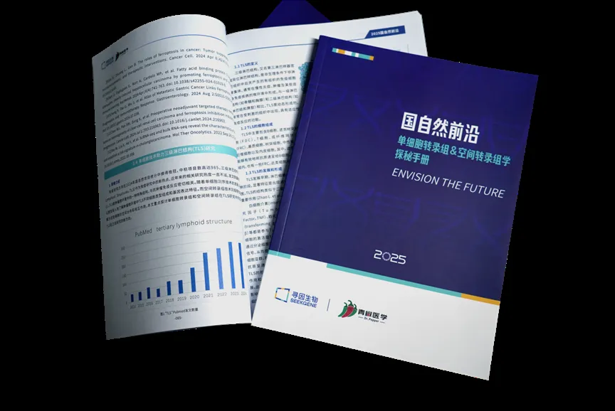
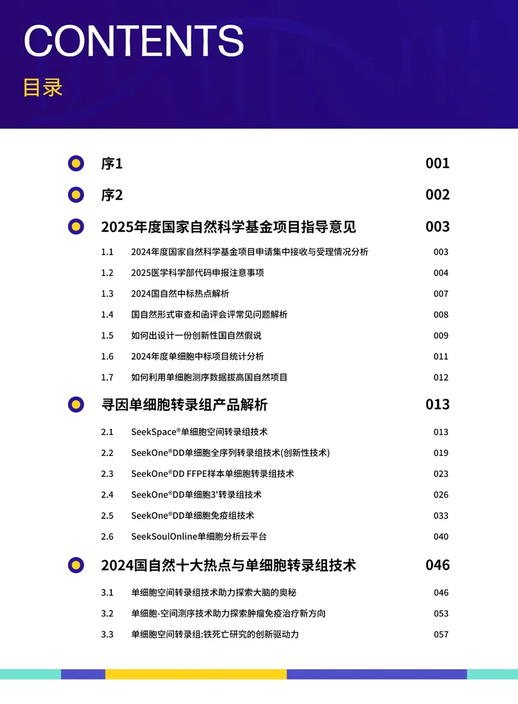
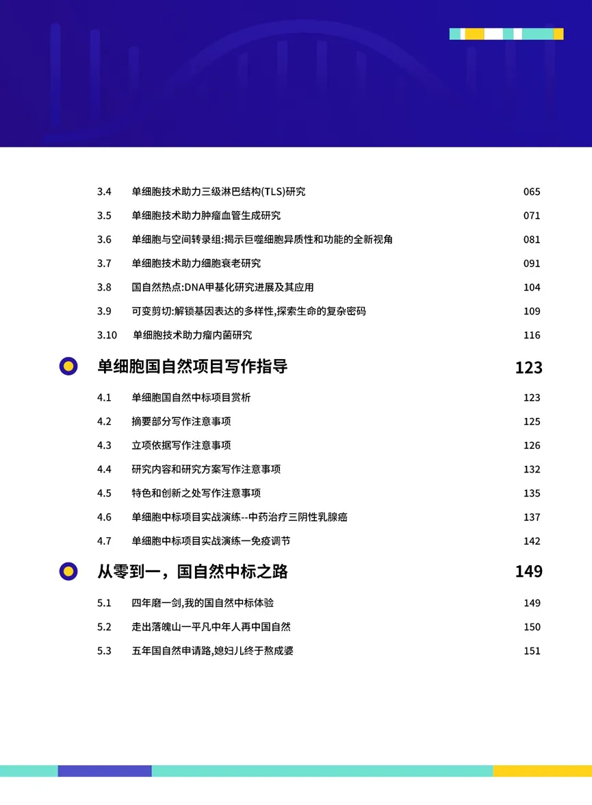
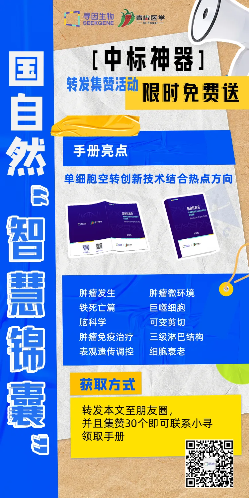

国自然利器| 单细胞转录组&空间转录组学探秘
原文：https://mp.weixin.qq.com/s?__biz=MzAwMzIzOTk5OQ==&mid=2247522836&idx=1&sn=50871e92dce848d19ab5fb8fa52fd1ac&chksm=9b3ce344ac4b6a52d2769367e09bf12914c09fbad99aae4a016cd92b956cc0ca8e4868f079b1#rd 合集：基金申报
《2025国自然前沿：单细胞转录组&空间转录组学探秘》手册免费送！
科研遇到瓶颈？国自然申请不知从何下手？不了解单细胞创新技术？那么这本**《 2025 国自然前沿：单细胞转录组&空间转录组学探秘》**手册能够为老师排忧解难。寻因生物与青椒医学 携手并肩，耗时数月合力编纂。

在本手册的编撰过程中 ,我们历经了无数次的研讨、修改和完善,每一个细节都凝聚着众多人的智慧和心血在此,我们怀着无比感激的心情,向所有给予我们支持和帮助的学会团体、专家、技术合作单位与媒体平台 致以最诚挚的谢意。希望各位老师能够以科学之法，解生命之奥秘；以创新之思，启未来之大门。
这里我们发放20本2025年国自然全新手册，获取方式请扫描下列二维码～PS：考虑到许多老师对国自然单细胞手册的需求，我们也会在后续活动中送出更多的手册～。记得关注我们哦！
我是小寻
适用对象：
无论您是初涉国自然的新手，还是深耕国自然项目申请多年的专家，希望掌握创新性技术以推动研究进展，本手册都将为您提供宝贵的资源和指导。
手册优势：


1、紧扣科学前沿
聚焦当下科研热点，为研究者提供最新的研究方向与思路，让你在科研浪潮中顺势而为，占得先机。
2、内容丰富全面
涵盖国家自然科学基金项目指南，详细解析寻因单细胞转录组产品，同时还深入探讨2024 国自然十大热点与单细胞转录组技术的结合，提供广阔的视野和丰富的素材。
3、实用性强
设有单细胞国自然项目写作指导以及国自然中标之路的经验分享，从 “从零到一” 全方位助力你在国自然申请中脱颖而出。
4、品牌实力支撑。
青椒医学团队已助三百余位学员中标国自然，成就年轻科研者国自然梦想。寻因生物一直专注于单细胞&空间测序技术创新自研，形成单细胞产品矩阵。
5、指导专家协会
在手册的编纂中邀请各方参与进来，集合五大学会+39位指导专家+6家联合技术单位+9家科研媒体平台+6家行业媒体平台打造本手册。为科学研究添砖加瓦，科研道路上之良伴。
总之，此手册集前沿资讯、技术解析、热点探讨、写作指导和经验分享于一体，是科研道路上不可或缺的得力助手。
